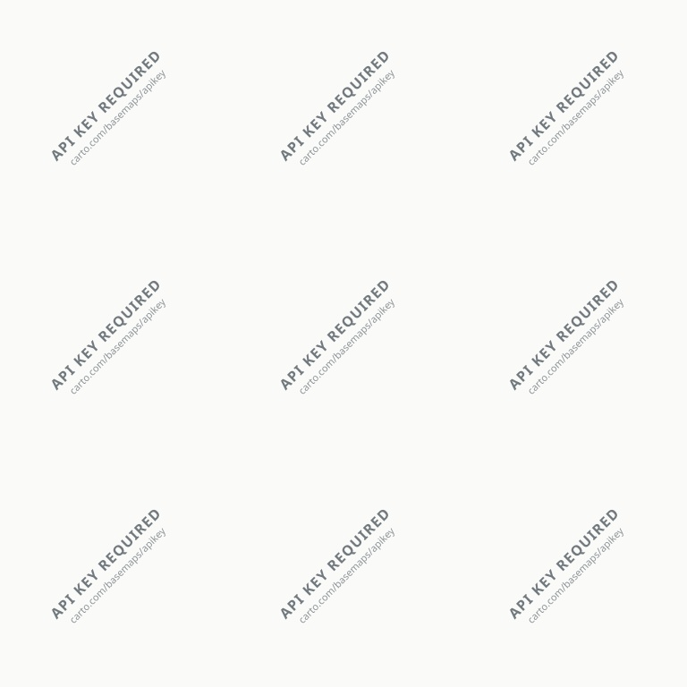

Tablero de Atención Vial DMQ
Quito ActivoCalles Reportadas
0
Baches Críticos
0
Votos Ciudadanos
0
Réplicas de Vecinos
0
Mapa de Calles y Rutas de Quito
Calles principales con nombres reales de Quito

Plano Vial de Quito: Av. Shyris, Simón Bolívar, Mariscal Sucre, Galo Plaza
Ver calles principales de Quito:
Peligro Inminente
Moderado
¿Cómo se atienden las calles según los vecinos?
Las cuadrillas de bacheo de la EPMMOP priorizan las avenidas con mayor tráfico y peligro según los respaldos y comentarios reales de los vecinos:
Prioridad = (Votos Vecinos × 2) + (Réplicas × 3) + Severidad